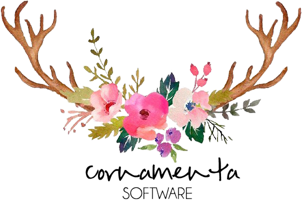

Cornamenta

Visión:
Cornamenta es una empresa reconocida por sus avances e innovaciones tecnológicas en el desarrollo de software para proyectos enfocados en la comunidad feminina. Desarrollando aplicaciones que aseguran la calidad, accesibilidad y manejo de cualquier usuario, con personalidad en los diseños del software, de igual manera, atractivos visualmente; que tengan un reconocimiento social por su utilidad; integrada por desarrolladores de software comprometidos por su empresa, visión alcanzada al año 2020.Misión:
La empresa Cornamenta Software crea softwares basados en dinámicas innovadoras, procesos eficientes y accesibles a la comunidad. El principal propósito es fomentar la interacción social entre la comunidad femenina. Para lograrlo, la empresa tiene como integrantes desarrolladores comprometidos, gracias a esto el trabajo se basa en la calidad, responsabilidad, ética y compromiso mutuo.